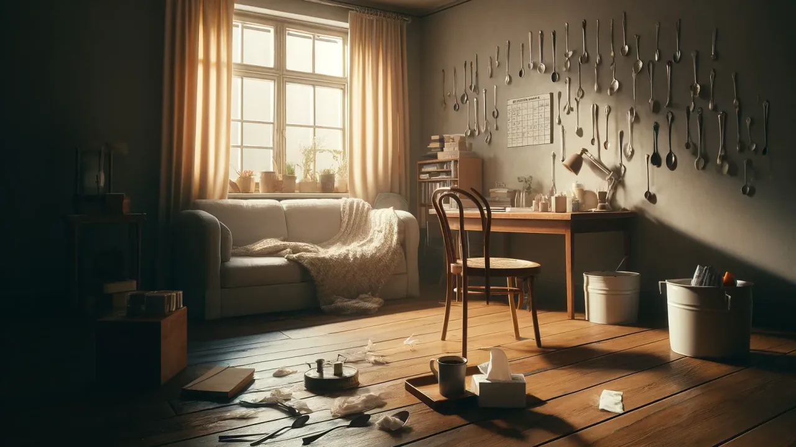

What Now? How to Actually Live With It
There's no magical finish line. But there are tiny, gritty, hard-won things that make this life 1% better — and some days, that 1% is everything.

The Chronic Illness Chronicles – Final Chapter
So, we’ve talked about it. The person with the illness. The kids. The partner. The whole damn house that feels like it’s caving in.
Now comes the question everyone thinks but rarely says out loud:
What now? What the hell do we do with this life we didn’t ask for? How do we survive it? And if we’re lucky… how do we live inside it, not just endure it?
Let me be honest: there’s no magical finish line. No perfect protocol. No “just do this and your family will thrive through chronic illness!” checklist.
But there are things. Tiny, gritty, hard-won things that can make this life 1% better. And some days? That 1% is everything.
Start Here: Survival Is Noble
If you're reading this, you're probably already doing the hard stuff. Waking up in a body that doesn't cooperate. Caring for someone who is barely functioning. Making decisions without good options. Holding your family together with medication schedules, casseroles, and a sense of humor that’s 80% sarcasm, 20% feral hope.
So first, let’s name it: Survival is not failure. Survival is strength. And if all you did today was endure it? That’s enough.
But let’s say you’re ready for just a little more. Something active. Something that feels like forward movement, even if it’s messy.
Here are a few places to begin.
1. Build One Tiny System That Saves Energy
We spend so much time in reaction mode—doctor calls, symptom spikes, emotional crashes—that we forget to create systems.
Start ridiculously small. ➡ Put all your medical records in one shared folder. ➡ Set a repeating calendar reminder for prescriptions. ➡ Create a one-page summary of symptoms + diagnoses for new providers. ➡ Print a freaking checklist for packing meds if you travel.
Systems don’t solve the problem—but they make you spend less life chasing it.
2. Outsource Guilt. Immediately.
Guilt is a liar. And it’s heavy. And it doesn’t help.
You are not lazy. You are not weak. You are not ruining your family.
You are navigating complexity with no map.
So ask yourself this: Would I expect this much from someone I love?
If not—stop expecting it from yourself.
3. Name the Season You’re In
Are you in survival mode? Stabilization? Slow rebuilding?
It helps to name the phase. Not to label yourself—but to align your expectations.
Here are four emotional/logical “seasons” I’ve lived through (sometimes all in one month):
Survival – You’re just trying to get through the next hour. Symptom flares, burnout, or crisis mode. Everything is triage.
Stabilization – You’re starting to tread water. Things are still hard, but they’re not changing every five minutes. Some structure is possible.
Rebuilding – You’ve got a little capacity to plan. You're finding treatments that help. There's space for reflection, therapy, reconnection.
New Normal – You know your limits and your tools. Life isn’t “back”—but it’s yours again. You adapt without constant panic. You even hope.
Naming the season lets you give yourself grace—and communicate clearly with the people around you.
4. Use Your “Bandwidth Budget” Like It Matters (Because It Does)
Imagine you have $10 of energy a day. That’s it.
Appointments cost $4. Cooking costs $2. Small talk with in-laws costs $1.50 (and requires recovery). Netflix and ice cream? $1, well spent.
Once it’s gone, it’s gone.
This is also known as the Spoon Theory, developed by Christine Miserandino. She described explaining chronic illness to a friend using a handful of spoons to represent limited energy. Every task costs a spoon. When you run out—you’re done. Simple, brilliant, and deeply relatable.
So ask yourself:
- What can be delayed?
- What can be delegated?
- What can be deleted?
Spend your energy on what actually moves the needle. Or brings joy. Or at least doesn’t make you want to scream.
5. Let People In—But Give Them a Role
“Let me know if you need anything” isn’t a plan.
But “Can you pick up a prescription on Tuesday?” “Could you watch the kids for 90 minutes while I nap?” “Will you send memes when I’m spiraling?”
That’s a role.
People want to help—but they need a job description. Be brave enough to give them one.
Here are some that have worked in our house:
The Grocery Runner – “Can you grab a few basics on your next trip and drop them at the door?”
The Medical Translator – “Can I read this lab result to you and get your take before I spiral?”
The Herx Text Friend – “If I text ‘Herxing bad,’ can you reply with something funny or just say, ‘You're doing great’?”
The Calendar Checker – “Once a month, can we spend 10 minutes making sure I didn’t miss any appointments?”
The Errand Buddy – “Can you drive me to [appointment/grocery/whatever] and just be there in case I crash?”
The Kid Distraction Crew – “Can you take the kids for an hour on Sunday so I can nap/cry/float in silence?”
The Advocacy Buddy – “Will you help me prep questions for my next appointment? I can’t think straight when I’m in there.”
The Spoon Guardian – “If you see me doing too much, remind me that rest is productive too.”
These don’t have to be heroic. They just need to be real.
Because the person who texts “Thinking of you” is sweet. But the one who shows up with Epsom salts and your favorite soup? That’s the one who gets a key to the city.
Give people a role. Let them in. Not because you’re weak—but because we literally weren’t built to survive this alone.
6. Find One Tiny Joy Ritual
Chronic illness steals joy with surgical precision.
So take it back—intentionally, even if it’s microscopic.
Spend your energy on what actually moves the needle. Or brings joy. Or at least doesn’t make you want to scream.
- Tea in your favorite mug.
- A 3-minute dance party with your kid.
- An episode of trash TV with zero shame.
- Sitting in the sun.
- A deep breath. A weird meme. Anything.
Joy isn’t frivolous. It’s necessary.
So... What Now?
Now, you keep going.
But maybe with less guilt. Maybe with one new boundary. Maybe with a list of what actually helps when you’re not okay.
You remind yourself that this life still matters—even if it’s harder, slower, more complicated than the one you planned.
You give yourself permission to be a work in progress. To suck at this some days. To be brilliant at it others. To ask for help. To laugh anyway. To live—not just exist.
Because yes, this is hard. But you’re still here. And that matters.
Let’s wrap this with one question: What have you done—big or small—that made this 1% easier for you or your family? Drop it in the comments. You might be someone’s lifeline today.
This concludes The Chronic Illness Chronicles—but the conversation is far from over.